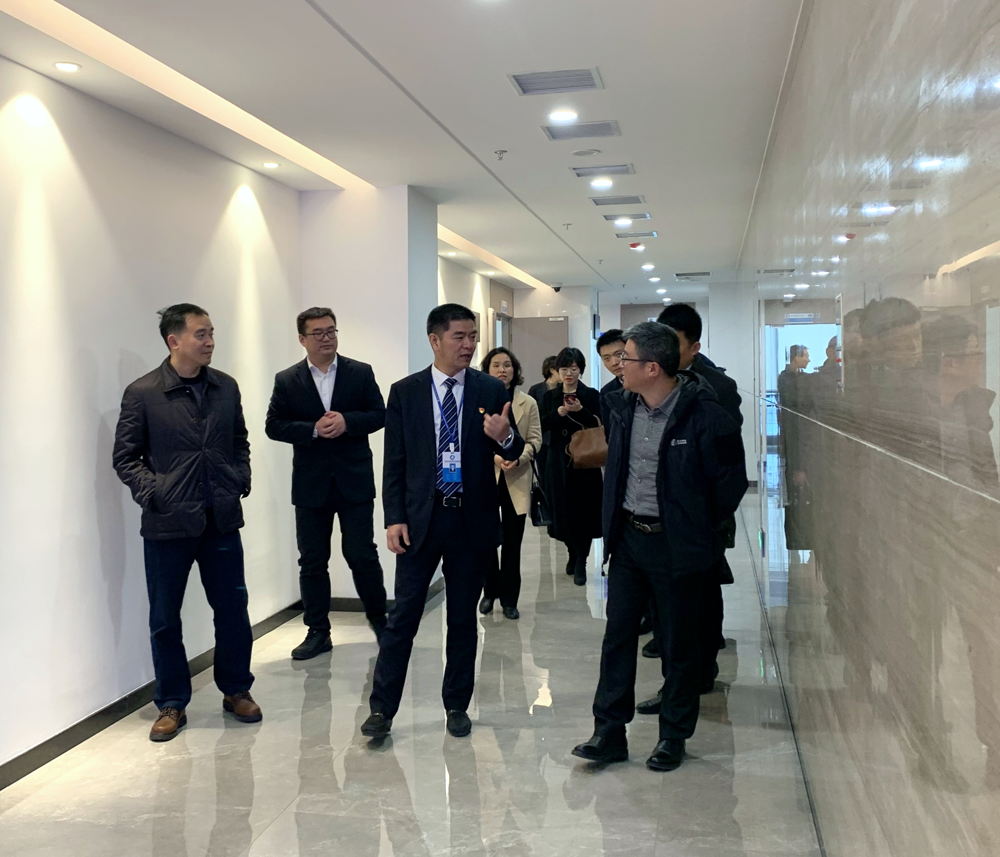
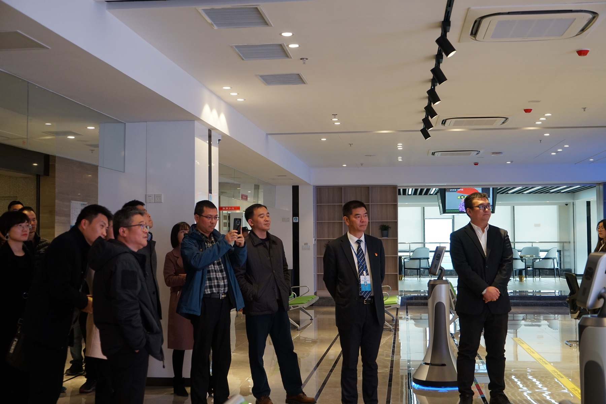

【信息发布时间：2020-12-23阅读次数：】 【我要打印】 【关闭】
12月23日上午，吴江区行政审批局局长孙曙东率相关人员一行9人莅临中心参观调研，中心主任顾一武热情接待了来访的领导们。
顾一武主任带领考察团参观了中心交易服务大厅、开评标区域和办公区域，并主要对开评标区域的新型智能化设备和现代化智能管理措施作了具体介绍。

智能机器人“沙沙”对中心发展沿革和岗位设置等基本情况，新场地区域分工和智能设施设备演示，以及主要开标区域等进行了引导介绍，展现了我中心网络3D实景化管理体系，体现出中心通过系统协同，将建筑物、信息化系统、智能化设备之间进行优化组合，实现了办公现代化、智能化，通信系统高性能化，建筑柔性化，建筑管理服务自动化。

孙曙东局长在听取我中心场馆智能化管理和公共资源交易全流程电子化的相关介绍后表示，张家港立破并举，有效推进交易数据赋能，为吴江区提供了良好的经验借鉴。双方表示要进一步深化合作，坚持推进公共资源交易改革，共同助力苏州地区公共资源交易领域营商环境的优化。